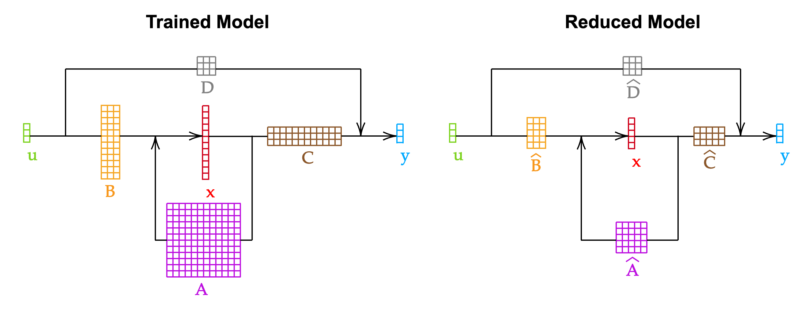
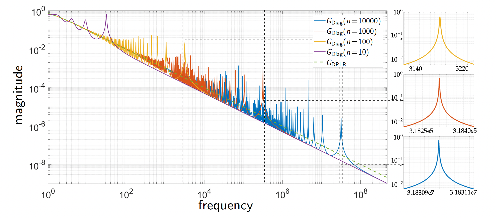
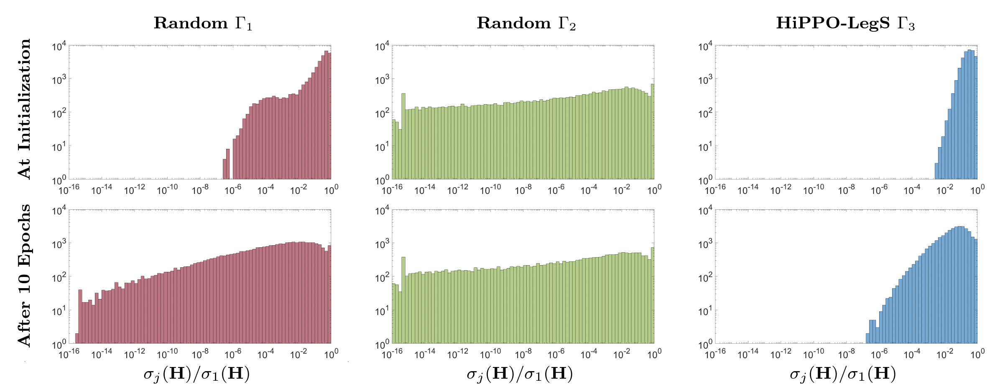
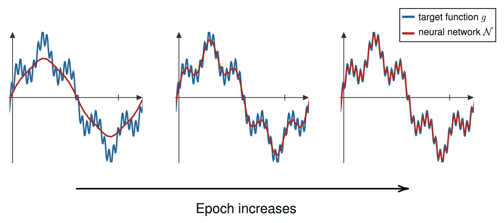
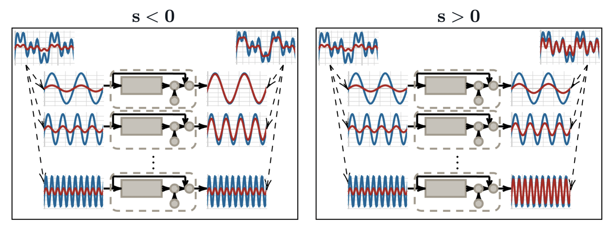
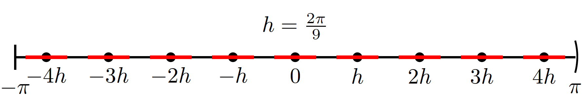
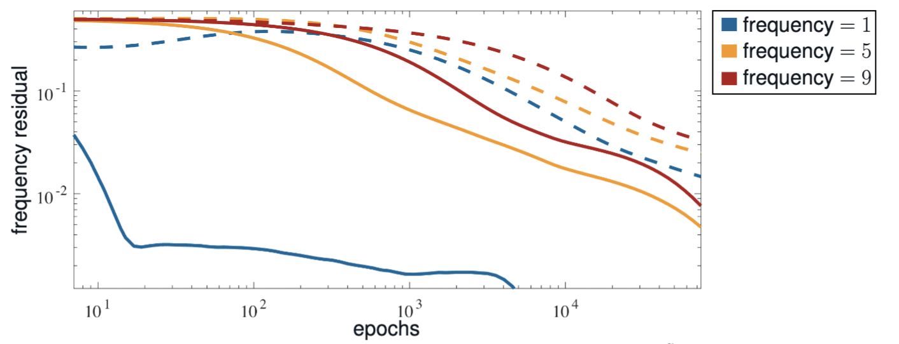

On this page, I briefly introduce some broad ideas of my research at Cornell and LBNL.
There are also some research projects that I did as an undergraduate student and no longer work
on.
Please see the publications page for more information.
Linear time-invariant systems and their applications in sequence modeling
Main Collaborators: N. Benjamin Erichson, Michael W. Mahoney, Dmitriy
Morozov, Arnur Nigmetov, Alex Townsend
Description: Linear time-invariant (LTI) dynamical systems are crucial
for understanding complex physical phenomena.
They are extensively studied across fields such as electrical engineering, control
theory, and numerical analysis.
Often, LTI systems derived from complex applications are unnecessarily large.
To utilize LTI systems more efficiently, we can reduce their size without significantly
altering their behavior.
This process is known as reduced-order modeling (ROM).
Together with Prof. Alex Townsend, we have designed and analyzed both algebraic and
data-driven ROM algorithms for LTI systems.
Meanwhile, recent advances in machine learning have highlighted the impressive
capability of LTI systems to capture long-range dependencies in sequential data.
This has led to the development of state-space models (SSMs) that outperform traditional
recurrent neural networks (RNNs) and transformers on long-range sequential problems,
finding applications in fields such as natural language processing and climate
forecasting.
Together with Dr. Arnur Nigmetov, Dr. Dmitriy Morozov, Prof. Michael Mahoney, and Dr.
Benjamin Erichson,
we have analyzed LTI systems within an SSM in the frequency domain and designed a robust
initialization scheme by "approximately diagonalizing" the state matrix.
We further proposed a parameterization scheme of the LTI systems, called HOPE, that
makes an SSM robust in initialization and training and have long-term memory.
Relevant Publications:
Annan Yu, Michael W. Mahoney, N. Benjamin Erichson,
There is HOPE to avoid HiPPOs for long-memory state space models,
arXiv:2405.13975. (link)
Annan Yu, Arnur Nigmetov, Dmitriy Morozov, Michael W. Mahoney, N. Benjamin
Erichson,
Robustifying state-space models for long sequences via approximate
diagonalization,
International Conference on Learning Representations (spotlight), 2024. (link)
Annan Yu, Alex Townsend,
Leveraging the Hankel norm approximation and data-driven algorithms in reduced order
modeling,
Numerical Linear Algebra with Applications 2024; e2555. (link)

Reduced-order modeling algorithms can be used to shrink the dimension of the
latent state-space of an LTI system.

The spikes in the transfer functions of LTI systems reveal that the previously proposed
state-space models are not robust.
Low-rank structures and approximations
Main Collaborators: Anil Damle, N. Benjamin Erichson, Silke Glas, Michael W. Mahoney, Alex Townsend
Description: Low-rank structures naturally arise in many real-world applications.
The singular values of a matrix provide a good measurement its numerical rank.
While the singular value decomposition gives us a natural way to reveal the rank of a matrix,
we sometimes need interpolative methods (e.g., LU and QR factorizations) for better efficiency
and interpretability. With Prof. Anil Damle, Prof. Silke Glas, and Prof. Alex Townsend, we have
connected a rank-revealing interpolative method to a concept called "local maximum volume."
The singular values of a matrix can be generalized to a bounded linear operator. In particular, the Hankel singular
values measure the numerical rank of an LTI system. Using the information of the Hankel singular values,
we could reduce the size of an LTI system when its singular values decay fast. The Hankel singular values
are also useful in understanding machine learning models, such as state-space models (SSMs). With Prof. Michael Mahoney
and Dr. Benjamin Erichson, we provided a theory for the success or failure of SSMs through the lens of Hankel singular values.
Based on that, we proposed a better parameterization scheme of the LTI systems in an SSM using their Hankel operators.
Relevant Publications:
Annan Yu, Michael W. Mahoney, N. Benjamin Erichson,
There is HOPE to avoid HiPPOs for long-memory state space models,
arXiv:2405.13975. (link)
Anil Damle, Silke Glas, Alex Townsend, Annan Yu,
How to reveal the rank of a matrix?,
arXiv:2405.04330. (link)
Annan Yu, Alex Townsend,
Leveraging the Hankel norm approximation and data-driven algorithms in reduced order
modeling,
Numerical Linear Algebra with Applications 2024; e2555. (link)
Different pivoting strategies in GE and QR can be more or less computationally
efficient as well as better or worse singular value estimators. The local maximum volume pivoting is
a balance between computational efficiency and theoretical guarantees.

The LTI systems in an SSM can exhibit drastically different distributions
depending on the initialization and training schemes. We observed that an SSM with high-rank LTI systems
tend to perform better than that with low-rank systems.
Theory of neural networks
Main Collaborators: Chloe Becquey, N. Benjamin Erichson, Diana Halikias,
Michael W. Mahoney, Matthew Esmaili Mallory, Dmitriy Morozov, Arnur Nigmetov,
Alex Townsend, Yunan Yang
Description: Neural networks are powerful and empirically successful
machine learning models.
However, the complexity of their structures and training processes has left us with limited
theoretical understanding, despite their practical success.
This has sparked a strong interest in developing a deeper theoretical foundation for deep
learning.
My research has focused on the following areas:
Expressiveness: The Universal Approximation Theorems (UATs) assert that neural
networks can approximate any smooth ground truth to an arbitrary degree of accuracy by
increasing the network's width or depth.
While not directly addressing neural network training, these theorems validate that the
models are reasonable.
We proved a version of UAT, showing that continuous operators can be
approximated by deep and narrow networks,
in collaboration with Chloe Becquey, Diana Halikias, Matthew Esmaili Mallory, and
Prof. Alex Townsend.
Initialization: Proper initialization is critical for training neural networks with
gradient-based optimization algorithms, especially in state-space models for long
sequences.
Previous initialization schemes, based on projecting input sequences onto the
Legendre basis, have shown instability.
In recent work with Dr. Arnur Nigmetov, Dr. Dmitriy Morozov, Prof. Michael Mahoney, and
Dr. Benjamin Erichson, we proved the instability of a popular initialization scheme and proposed a
stable alternative based on pseudospectral theory.
Training: Analyzing neural network training is challenging due to complex structures
and optimization algorithms.
Neural Tangent Kernels (NTKs) offer a partial solution by assuming "infinite width"
networks.
Together with Prof. Yunan Yang and Prof. Alex Townsend, we investigated the training
of a simple two-layer neural network, uncovering the frequency bias phenomenon—where
low-frequency content is learned before high-frequency content.
We proposed a new class of loss functions that can enhance, diminish, counteract, or
even reverse this bias.
Relevant Publications:
Annan Yu, Michael W. Mahoney, N. Benjamin Erichson,
There is HOPE to avoid HiPPOs for long-memory state space models,
arXiv:2405.13975. (link)
Annan Yu, Arnur Nigmetov, Dmitriy Morozov, Michael W. Mahoney, N. Benjamin
Erichson,
Robustifying state-space models for long sequences via approximate
diagonalization,
International Conference on Learning Representations (spotlight), 2024. (link)
Annan Yu, Yunan Yang, Alex Townsend,
Tuning frequency bias in neural network training with nonuniform data,
International Conference on Learning Representations (poster), 2023. (link)
Annan Yu, Chloe Becquey, Diana Halikias, Matthew E. Mallory, Alex Townsend,
Arbitrary-depth universal approximation theorems for operator neural
networks,
arXiv:2109.11354. (link)

Frequency bias says that the low-frequency content in the target function is
learned prior to the high-frequency one.

With a Sobolev-based loss function, we can tune s to change the
frequency bias.
Nonuniform samplers and their stability
Main Collaborators: Alex Townsend, Yunan Yang
Description: In computing with periodic functions on the unit hypersphere,
uniformly spaced samples are preferred.
For instance, the discrete Fourier transform and its inverse are perfectly conditioned at
evenly spaced grid points.
However, challenges arise with nonuniform samples.
In collaboration with Prof. Alex Townsend, we analyzed the stability and accuracy of
interpolation and quadrature rules when samples deviate from evenly spaced points on the
unit circle.
With Prof. Yunan Yang and Prof. Alex Townsend, we extended the theoretical understanding of frequency
bias in neural network training to nonuniform datasets,
demonstrating that low-frequency content is typically learned before high-frequency content.
Our findings build on previous work on uniform training datasets by applying a quadrature
rule at the nonuniform locations of the training data,
offering new insights into training with nonuniform datasets.
Relevant Publications:
Annan Yu, Alex Townsend,
On the stability of unevenly spaced samples for interpolation and quadrature,
BIT Numerical Mathematics, vol 63(23), 2023. (link)
Annan Yu, Yunan Yang, Alex Townsend,
Tuning frequency bias in neural network training with nonuniform data,
International Conference on Learning Representations (poster), 2023. (link)

When the samplers are perturbed from the evenly spaced points, the
interpolation and quadrature start to lose stability and accuracy.

When we have a nonuniform training dataset, frequency bias is more easily
observed when a quadrature-based loss function (solid lines) is in use than the
standard mean-squared loss (dashed lines).
On this page, you can find all my publications and preprints.
Annan Yu, Michael W. Mahoney, N. Benjamin Erichson,
There is HOPE to avoid HiPPOs for long-memory state space models,
arXiv:2405.13975. (link)
Anil Damle, Silke Glas, Alex Townsend, Annan Yu,
How to reveal the rank of a matrix?,
arXiv:2405.04330. (link) (poster)
Annan Yu, Arnur Nigmetov, Dmitriy Morozov, Michael W. Mahoney, N. Benjamin Erichson,
Robustifying state-space models for long sequences via approximate diagonalization,
International Conference on Learning Representations (spotlight), 2024. (link) (poster)
Annan Yu, Alex Townsend,
Leveraging the Hankel norm approximation and data-driven algorithms in reduced order
modeling,
Numerical Linear Algebra with Applications 2024; e2555. (link)
Annan Yu, Alex Townsend,
On the stability of unevenly spaced samples for interpolation and quadrature,
BIT Numerical Mathematics, vol 63(23), 2023. (link)
Annan Yu, Yunan Yang, Alex Townsend,
Tuning frequency bias in neural network training with nonuniform data,
International Conference on Learning Representations (poster), 2023. (link) (poster)
Annan Yu, Chloe Becquey, Diana Halikias, Matthew E. Mallory, Alex Townsend,
Arbitrary-depth universal approximation theorems for operator neural networks,
arXiv:2109.11354. (link)
Larry Schumaker, Annan Yu,
Approximation by polynomial splines on curved triangulations,
Computer Aided Geometric Design, vol 92, 2022. (link)
Nancy Mae Eagles, Angèle M. Foley, Alice Huang, Elene Karangozishvili, Annan Yu,
On H-chromatic symmetric functions,
The Electronic Journal of Combinatorics, vol 29(1), 2022. (link)
On this page, you can find the talks I have given and I plan to give in the future.
Future talks:
Training an LTI System without an Objective: a Numerical Analyst's Perspectives on State-Space Models,
Mid-Atlantic Numerical Analysis Day, Temple University, Philadelphia, USA, 2024.
How Does a Machine Learn Sequences: an Applied Mathematician's Guide to Transformers, State-Space Models, Mamba, and Beyond,
SIAM Conference on Mathematics of Data Science (MDS24), Atlanta, USA, 2024. (2-hour tutorial)
Robustifying Long-Memory State-Space Models via Hankel Operator Theory,
SIAM Conference on Mathematics of Data Science (MDS24), Atlanta, USA, 2024. (poster)
Previous talks:
Representations and evolution of linear time-invariant systems in state-space models,
26th International Symposium on Mathematical Theory of Networks and Systems, University of
Cambridge, UK, 2024.
Rectifying unstable rational representations in sequence models,
SIAM Conference on Applied Linear Algebra, Sorbonne University, France, 2024.
Robustifying state-space models for long sequences via approximate diagonalization,
International Conference on Learning Representations, Austria, 2024. (poster)
How to avoid HiPPOs?,
SCAN Seminar, Cornell University, USA, 2024.
Robustifying state-space models via approximate diagonalization,
SciDAC AI monthly synchronization, Lawrence Berkeley National Laboratory, USA, 2024.
(online)
Linear time-invariant systems in machine learning,
SIAM New York-New Jersey-Pennsylvania (NNP) Section Annual Meeting, New Jersey Institute of
Technology, USA, 2023. (50-minute tutorial)
Leveraging the Hankel norm approximation and data-driven algorithms in reduced order
modeling,
Numerical Analysis in the 21st Century, University of Oxford, UK, 2023.
Leveraging the Hankel norm approximation and block-AAA algorithms in reduced order
modeling,
SIAM Southeastern Atlantic (SEAS) Section Annual Meeting, Virginia Tech, USA, 2023.
Tuning frequency bias in neural network training,
International Conference on Learning Representations, Kigali, Rwanda, 2023. (poster)
Tuning frequency bias in neural network training,
Workshop on Numerics and Acoustics, Imperial College London, UK, 2022.
H-chromatic symmetric functions,
2020 FUSRP Mini-Conference, Fields Institute for Research in Mathematical Sciences, Canada,
2020. (online)
On this page, you can find my teaching and grading experience at Cornell University and
Vanderbilt University.
At Cornell University:
Fall 2023: MATH 6110, Real Analysis (recitation TA, 1 section)
Fall 2022: MATH 2310, Linear Algebra with Applications (recitation
TA, 2 sections)
At Vanderbilt University:
Fall 2020: MATH 3620, Introduction to Numerical Mathematics (TA, 1
section)
Spring 2020: MATH 3100, Introduction to Analysis (grader, 1 section)
Spring 2020: MATH 3620, Introduction to Numerical Mathematics (TA, 1
section)
Fall 2019: MATH 3200, Introduction to Topology (grader, 1 section)
Fall 2019: CS 3251, Intermediate Software Design (TA, 3 sections)
Fall 2018: CS 1101, Programming and Problem Solving (TA, 3 sections)
Spring 2018: MATH 2300, Multivariable Calculus (grader, 1 section)